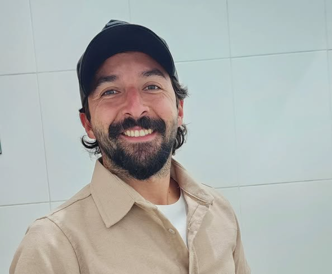
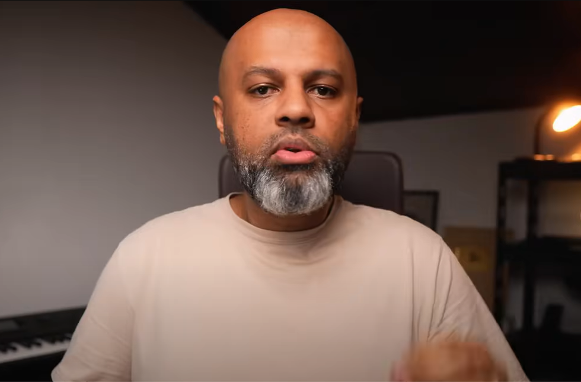

Rafael Dutra
Produção Musical
11 anos de experiência
Rafael Dutra é compositor, cantor, produtor musical e engenheiro de áudio radicado em Belo Horizonte. Um mineiro nascido em Brasília.É formado em Engenharia de Som e Produção Musical pela Bituca - Universidade de Música Popular de Barbacena, e atua como engenheiro de som de gravação, mixagem, masterização e sonorização. Além de ser sócio de um dos maiores estúdios de Belo Horizonte, o Acústico Motor.